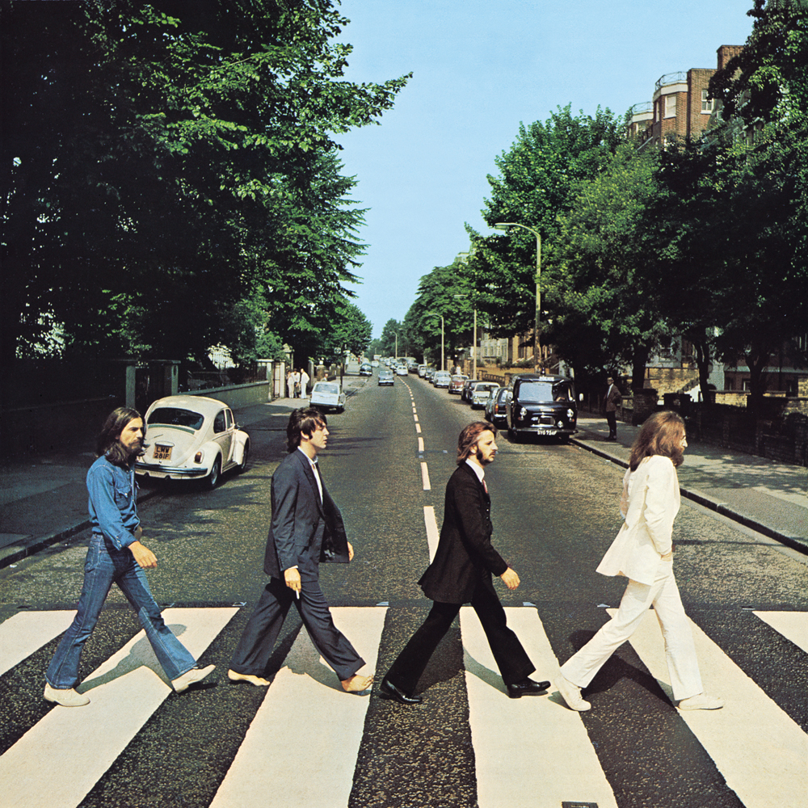
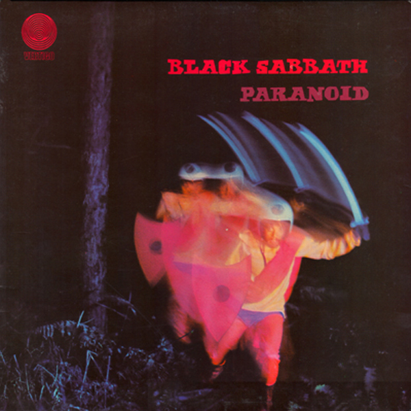
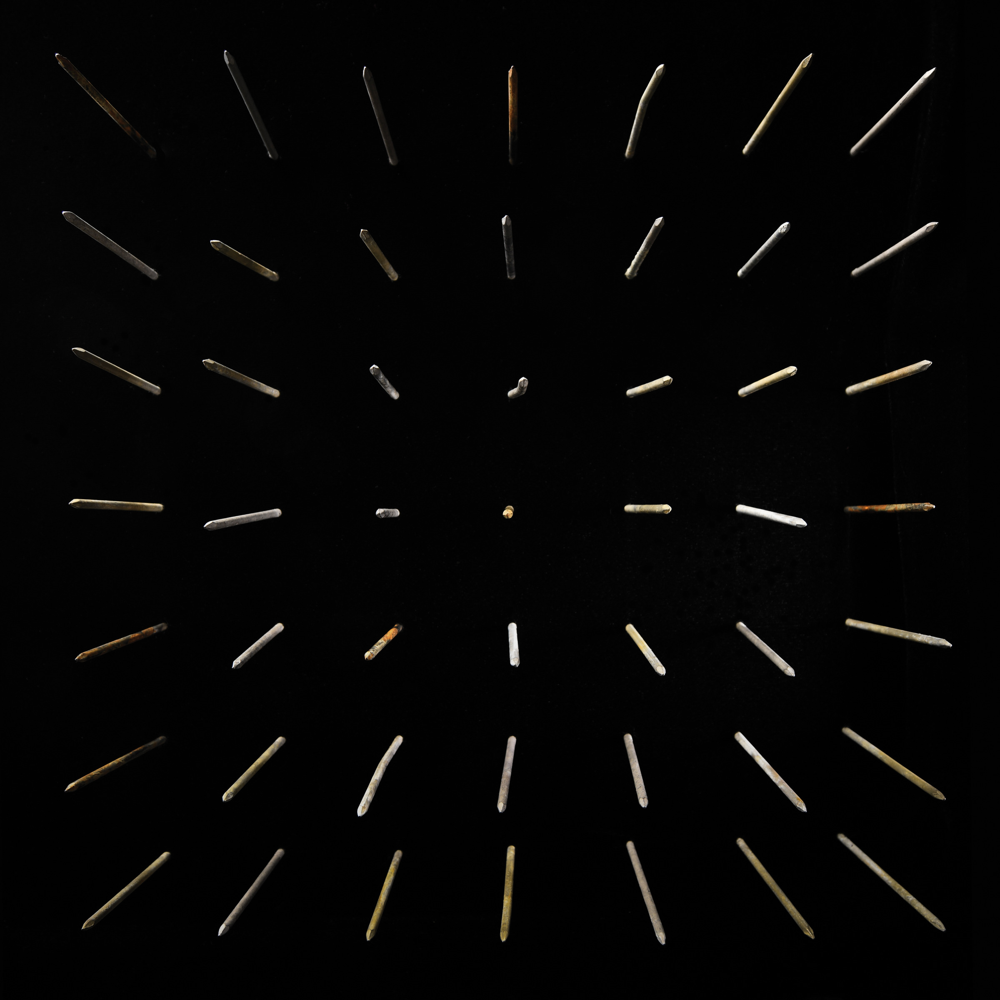

Pop music, more than any other genre, is closely tied to the economic forces of mass production and mass marketing. The first popular standards were a result of the new market for sheet music in the 19th century. For the first time, songwriters could earn a living from consumers without a traveling show or a supportive patron. The invention of the phonographic cylinder at the tail end of the 19th century, and the more lasting disc technology developed at the beginning of the 20th century took the standardization of songs and potential for mass consumption a step further.
Non-Classical Music in the first half of the 20th century was broadly referred to as "popular" music, not "pop" music. Nonetheless, the popular music from the 1900s to the 1940s that appealed to the most mainstream tastes in America, is generally recognized now as Traditional Pop.
The dynamic post-World War II economy and the advent of the Rock & Roll era brought about a new age of teen consumerism and the first wave of Teen Pop celebrities. Various sources suggest the use of the word "pop" dating back well before the 1950s, but it was certainly the '50s when it took hold as a cultural phenomenon.
Because "pop" can simply mean what is or was popular in many different times and places, defining it more narrowly as an actual musical genre is arguably ill-advised. Nonetheless, most pop music does share many distinct traits. Pop music is generally designed to be catchy, with a beat or a melody or a lyric or a hook (or all four) that are readily accessible, particularly to young people. It is also produced, often by large and expert teams, in way that removes any rough edges.
Pop music, more so than Rock music, also tends to emphasize the vocalist as the lead performer. As such, pop songs tend to be somewhat short with only brief instrumental breaks. A basic intro/verse/chorus/verse/chorus structure, or some mild variation on that structure, is very common in pop music and has remained common over the decades.
In the 1960s, The Beatles brought Pop Rock to the fore, and in doing so challenged some notions of what rough edges might be allowed within the basic construct of pop. In the 1970s, many Soft Rock artists went the other direction and softened pop reducing the centrality of the beat in pop music. By the end of the decade, however, Disco had taken pop in an even more dance oriented direction paving the way for Dance-Pop.
Pop and R&B have always coexisted with a great deal of direct crossover and indirect crosspollination. In the 1980s those lines were blurred even more as Michael Jackson was crowned the king of pop. In the 21st century, Hip Hop has become a major influence in pop music with many pop stars employing the top hip hop producers to assist in making their hits.
Pop music has also become globalized to a tremendous extent (e.g., C-Pop, K-Pop, Indian Pop, and Latin Pop) reflecting both a global economy and a growing consumer class in most of the world.
Rock is a widely popular and vast genre that gathers together a wide range of different styles. Its origins can be traced to US recordings in the late 1940s that combined major elements from Jump-Blues and Swing, with increased prominence given to the role of the electric guitar drawn from Chicago Blues. Even though the term "rock" was originally used by some Blues performers in the late 1930s to describe the bawdier version of their music with faster tempo songs, it went largely unrecorded until the late 1940s.
Rock in its original form was a song-based type of music that typically used a verse-chorus structure with a backbeat rhythm and the electric guitar at the forefront of the music being heavier and/or faster than its predecessor genres. The structure and sound of rock is based around a prominent electric guitar sound with a bass guitar and drums providing its rhythm (although electric guitars can also sometimes contribute, usually referred to as rhythm guitars in this context). However, rock musicians have experimented with this base structure from the beginning so any two different rock bands may not sound anything alike or even have similar structures. Rock music from its inception has symbolized the counter-culture and served as a vehicle for rebellion and protest, although the proliferation of the genre has diluted this characteristic's importance as a core aspect.
Rock originated in the southern United States and became popular in the 1950s through its two original forms Rock & Roll and Rockabilly. Rock & roll was used to describe black musicians such as Little Richard and Chuck Berry who played Rhythm & Blues at a faster tempo and incorporated new technical innovations such as the electric guitar, amplifier and microphone. Rockabilly was used to describe young Western Swing performers who incorporated fast-paced rhythm and blues with Country influences. This term tended to be applied to white musicians like Carl Perkins and was popularized by the early recordings of Elvis Presley. This type of music started to decline in popularity in the late 1950s and early 1960s as Pop gained wider prominence, although the development of subgenres such as Surf Rock and Garage Rock retained the public's interest and general relevance of the genre.
Rock music in the United Kingdom evolved from blues via Skiffle, a genre derived from Jazz and Folk. In the 1960s, the so-called "British Invasion" of UK bands such as The Rolling Stones and The Beatles helped revive mainstream interest in the genre and cement it in the popular culture on both sides of the Atlantic Ocean. These bands tended to recreate elements of American blues and rock & roll and fuse them with music popular in the UK, including Beat Music and Mod, which generated a cross-influence between the US and the UK and led to a boom in popularity.
During the 1960s, rock music expanded beyond its traditional roots and started to incorporate more and more unconventional aspects such as different guitar effects and distortion, diverse instrumentation, and general experimentation. As rock became commercialized, Pop Rock developed as a more accessible and radio-friendly version. The 1960s also saw the development of Folk Rock, which was widely used in protests around the world, and which subsequently led to the creation of the hallucinogenic drug-influenced Psychedelic Rock. Progressive Rock was also formed in the 1960s and involved the use of other instruments such as keyboards, as well as generally more complex and experimental songwriting.
In the 1970s, Hard Rock, a garage rock and blues rock influenced subgenre with more aggressive vocals and more pronounced guitar distortion came into prominence. Hard rock laid the foundations for Metal, which turned up the intensity further and would later evolve into many diverse subgenres. The theatrical and campy Glam Rock was developed in the early 1970s and saw immense popularity in the first half of the decade. Punk Rock took off in the mid-1970s and focused on an aggressive, hard-edged, and stripped down sound as well as counter-culture aesthetics. The Punk scene influenced both the mainstream and the underground in the 1980s and gave rise to New Wave, Post-Punk, and eventually, Alternative Rock and Indie Rock whose various forms would become mainstays in subsequent decades.
In the decades since its inception, rock has continued to evolve, splinter, and crossover with other genres: various diverse subgenres have reached both underground and mainstream popularity and various regional scenes have been developed. Rock has remained a commercial force and has continued to influence and define popular culture in countries across the world.
Folk music is a very broad term used for music rooted in the mostly oral traditions of initially rather small social groups. The original context of folk music often was to accompany other types of social activities, like manual labour, religious rites or family gatherings. The eponymous, notoriously difficult "folk" or "people" concept can therefore relate to a number of different aspects: groups defined through ethnicities, tribes, nations, large regions, occupations, religions, families etc. may each serve as parameters for different folk musics (such as Native American Music, Hill Tribe Music, Canadian Folk Music, Work Songs or East Asian Folk Music). It is used as a distinct category from the high art concept of Classical Music and comparatively modern forms of commercially distributed, written popular music (such as Pop or Rock).
The term nowadays can be divided into two different main categories: Traditional Folk Music and Contemporary Folk. Traditional folk music (as a subcategory of Regional Music) denotes many different types of music with usually specific regional roots and served as the original concept for folk music. Among its typical characteristics are unknown origins of songs (usually replaced with the concept of a collective composing effort through time), an evolutionary approach to songs, and a comparatively fixed repertory of similar tunes which varies in size. A once common criterion – folk music being "rural" as opposed to "urban" – is nowadays widely rejected. Arising in the mid-20th century, contemporary folk is meant to describe music that still has certain forms of European or American folk music as its major influence, yet bringing it from a traditional context into that of popular music.
Emerging mainly on the eastern coast of the United States in the late 1970s, hip hop is a form of music emphasizing rhythmic beat patterns and spoken delivery rather than harmonic melodies and sung vocals. Much of hip hop's roots can be traced to Deejay, a form of Reggae music that an immigrant DJ Kool Herc hoped to emulate in the Bronx borough of New York City. The style quickly took over in uptown neighborhoods such as Harlem and Queens, where many enjoyed the loose, afro-centric nature of the parties Kool Herc would put on. Adapting the format to Disco and Funk breaks rather than the reggae Herc was used to further enhanced the genre's appeal in urban communities.
The music quickly took over in New York and Connecticut while expanding across the United States and eventually other countries through the 1980s and 1990s. Eventually incorporating Soul and Jazz breaks into its musical lexicon, hip hop as it is known today continues to incorporate sampling of both popular and obscure tracks from the past and present that one or more MCs rap lyrics over in a stylized, rhythmic response or addition to the beat.
Synthpop is a style of hook-laden popular music led by a prominent, melodic synthesizer sound. It gained huge commercial success in the 1980s, dominating the UK charts throughout most of the decade, whilst its origins can be traced back to the early to mid-1970s. It developed alongside New Wave and Minimal Synth, drawing influences from Moog-heavy Space Age Pop and various keyboard-orientated styles associated with the Progressive Rock movement, particularly Progressive Electronic. The genre was initially spearheaded by Krautrock band Kraftwerk, as well as other such early examples as Hot Butter.
Historically, the categorization of the terms synthpop and 'electropop' in relation to each other have led to some confusion. The two genres have sometimes been used interchangeably, but they are not synonyms: Electropop has similar roots, but gained its most widespread exposure in the 21st century, typically consisting of a heavily-produced, stereophonic 'wall of sound' mix; dense layers of arrangement and electronic textures; and crisp, warm low-frequency synthesizer sounds, drawing more from various Electronic Dance Music styles, such as Electro House.
Synthpop, meanwhile, sounds sparser in relation, mechanical-yet-atmospheric, often with a colder, minimal, more detached feel. Due to when the bulk of the music was made, the synthesizer sound and overall production and arrangement is recognizable as sounding "quintessentially 1980s" (or late 1970s): in general terms, the sound of synthpop can be considered more primal and less 'up-to-date'. This applies to both the original huge wave of the style and more modern artists, the latter often due to a degree of nostalgia and/or emulation and imitation (though sometimes elements of electropop are inherently present due to modern production techniques and recording technology).
Other common tropes include complementary electric guitar licks; funky basslines (often played on a synthesizer); pulsating drum machine patterns, regularly provided by the Simmons kit; use of sequencers; and quasi-robotic, off-key vocals. The introduction of new computer technology, digital synths (e.g. the Fairlight CMI) and MIDI greatly influenced the development and future of synthpop's sound during 1983 and 1984.
Representative artists include Orchestral Manoeuvres in the Dark, The Human League, Yazoo, Depeche Mode, Pet Shop Boys, Gary Numan (and Tubeway Army), Thomas Dolby, John Foxx, Soft Cell and Tears for Fears, whilst more modern examples of the sound are Ladytron, Cut Copy, CHVRCHES, Grimes, Crystal Castles and La Roux.
The style was predominantly exemplified by British acts, but various other notable synthpop scenes appeared on a global scale, such as Sandii & the Sunsetz, early Yellow Magic Orchestra and Plastics from Japan, and European bands a-ha, Alphaville, Propaganda and Camouflage.
Synthpop lays the foundation for various sub-styles, such as Bitpop, which utilizes Chiptune and 16-bit sounds, and Futurepop, a modern EBM genre.
Albums/Artists
MGMT Little Dark Age Release Date: 9 February 2018 Track Listing:
1 She Works Out Too Much 4:38
2 Little Dark Age 4:59
3 When You Die 4:23
4 Me and Michael 4:49
5 TSLAMP 4:29
6 James 3:52
7 Days That Got Away 4:44
8 One Thing Left to Try 4:20
9 When You're Small 3:30
10 Hand It Over 4:14
The Knife Silent Shout Release Date: 20 March 2006 Track Listing:
1 Silent Shout 4:53
2 Neverland 3:38
3 The Captain 6:08
4 We Share Our Mothers' Health 4:11
5 Na Na Na 2:27
6 Marble House 5:18
7 Like a Pen 6:13
8 From Off to On 3:57
9 Forest Families 4:08
10 One Hit 4:27
11 Still Light 3:15
Depeche Mode Violator Release Date: 20 March 1990 Track Listing:
1 World in My Eyes 4:22
2 Sweetest Perfection 4:40
3 Personal Jesus 4:52
4 Halo 4:25
5 Waiting for the Night 6:05
6 Enjoy the Silence 6:12
7 Policy of Truth 4:52
8 Blue Dress 5:42
9 Clean 5:23
Jazz pop is a style of Pop that incorporates elements from Jazz. The jazz instrumentation is worked into a melodic, accessible pop format that places the primary focus on the vocals. As a result, unlike most jazz, jazz pop contains little to no improvisation, a trait which it shares with Smooth Jazz.
Albums/Artists
Joni Mitchell The Hissing of Summer Lawns Release Date: November 1975 Track Listing:
1 In France They Kiss on Main Street 3:17
2 The Jungle Line 4:20
3 Edith and the Kingpin 3:35
4 Don't Interrupt the Sorrow 4:04
5 Shades of Scarlett Conquering 4:57
6 The Hissing of Summer Lawns 3:00
7 The Boho Dance 3:56
8 Harry's House / Centerpiece 6:52
9 Sweet Bird 4:10
10 Shadows and Light 4:15
Paddy McAloon I Trawl the MEGAHERTZ Release Date: 2 June 2003 Track Listing:
1 I Trawl the MEGAHERTZ 22:08
2 Esprit de Corps 4:52
3 Fall From Grace 4:51
4 We Were Poor 3:39
5 Orchid 7 4:22
6 I'm 49 3:46
7 Sleeping Rough 3:30
8 Ineffable 2:40
9 ...But We Were Happy 3:48
Pop rock is a fusion genre used to describe standard verse-chorus Pop music that can also be categorized under Rock for its use of guitars, drums, and propulsive rhythms. The genre manifested at the tail end of the 1950s as a more radio-friendly alternative to Rock & Roll and R&B, consisting mainly of white performers such as Roy Orbison and Del Shannon. Over the next decade, pop and rock continued to mix together and create new subgenres like Vocal Surf and Beat Music. In the 1970s, pop rock became both rougher (Power Pop) and smoother (Soft Rock); in the 1980s–90s, it fused with some Alternative Rock to make Jangle Pop and Britpop. Today, pop rock remains an active, wide-ranging genre with much crossover between other pop styles.
Albums/Artists

The Beatles Abbey Road Release Date: 26 September 1969 Track Listing:
1 Come Together
2 Something
3 Maxwell's Silver Hammer
4 Oh! Darling
5 Octopus's Garden
6 I Want You (She's So Heavy)
7 Here Comes the Sun
8 Because
9 You Never Give Me Your Money
10 Sun King
11 Mean Mr. Mustard
12 Polythene Pam
13 She Came In Through the Bathroom Window
14 Golden Slumbers
15 Carry That Weight
16 The End
17 Her Majesty [hidden track]
David Bowie The Rise and Fall of Ziggy Stardust and the Spiders From Mars Release Date: 16 June 1972 Track Listing:
1 Five Years 4:42
2 Soul Love 3:34
3 Moonage Daydream 4:40
4 Starman 4:10
5 It Ain't Easy 2:58
6 Lady Stardust 3:22
7 Star 2:47
8 Hang On to Yourself 2:40
9 Ziggy Stardust 3:13
10 Suffragette City 3:25
11 Rock 'n' Roll Suicide 2:58
The Smiths The Queen Is Dead Release Date: 16 June 1986 Track Listing:
1 The Queen Is Dead / Take Me Back to Dear Old Blighty (Medley) 6:23
2 Frankly, Mr. Shankly 2:17
3 I Know It's Over 5:48
4 Never Had No One Ever 3:36
5 Cemetry Gates 2:39
6 Bigmouth Strikes Again 3:12
7 The Boy With the Thorn in His Side 3:15
8 Vicar in a Tutu 2:21
9 There Is a Light That Never Goes Out 4:02
10 Some Girls Are Bigger Than Others 3:14
The term art rock has been employed to describe several works of Rock music developed right after the 1960s Psychedelic Rock explosion. Following on the heels of this phenomenon, art rock has been the result of musicians developing an interest towards a handful of forms of music out of the boundaries of rock and, in general terms, making an attempt to break away as much as possible from the constrains imposed by Rock & Roll (or from the roots of rock itself, which, in turn, inspired genres like Blues Rock, Country Rock or U.S. Folk Rock). A non-musical factor that could explain this development is the conscious transition that certain rock (and non-rock) artists made from singles-based music towards a bigger development of the album as a cohesive lyrical and thematic whole (an important step towards the popularization of the so-called concept album) as shown by the 1966–1967 set of examples like Pet Sounds, Freak Out!, The Who Sell Out or Sgt. Pepper's Lonely Hearts Club Band (which can be counted as forerunners of later art rock).
The Velvet Underground & Nico, which interpolated raw Garage Rock and psychedelia with lengthy Modern Classical-inspired drone and noise passages, unorthodox guitar tunings with heavy use of feedback, and subject matter generally centered around stark lyrical topics (all tied in with elaborate pop art-inspired imagery and live performances) is considered by critics and fans as the starting point of art rock. This template of limit-breaching rock music, concept-oriented LPs and complex live performances would be the basis for many artists during the 70s that added various influences to this archetype, including Jazz, Western Classical Music, Funk, avant-garde and early Electronic and Ambient music (and even instrumentation typical of some of these styles). Examples of art rock musicians during this stage include Roxy Music (along with the solo careers of Brian Eno and Phil Manzanera, as well as the Roxy-related 801), Pink Floyd, Station to Station/Berlin trilogy-era David Bowie, Peter Gabriel, Barclay James Harvest, Steve Harley/Cockney Rebel and ex-Velvet Underground members Lou Reed and John Cale.
Ever since its beginnings, art rock has shared connections, musical ties and even presents apparent overlaps with Experimental Rock and Progressive Rock (eventually also bearing a relationship with styles like Art Pop, Glam Rock, Krautrock and Jazz-Rock). While art rock strives to find a level of complexity similar to the one present in these two affiliated genres, it generally features a mix of rock music that tends to follow certain Pop-based structures or patterns along with the aforementioned set of eclectic influences and certain degree of complexity and conceptuality, in contrast to the more classical/jazz-mimicking or inspired patterns of prog suites, or the more radical and angular experimental rock.
After the Punk Rock explosion of the second half of the 1970s, art rock dissolved, during the following decades, into other forms of rock music, including (but not limited to): Post-Punk, New Wave, Art Punk, and Post-Hardcore. The 1990s and 2000s would then see a series of newer bands taking inspiration from the musical and conceptual leanings of 60s/70s art rock acts (along with other influences) and as such, groups like late-90s/early-00s Radiohead, The Mars Volta, TV on the Radio, dEUS, АукцЫон [Auktyon], and The Mollusk-era Ween have been commonly credited with reviving popular interest in the genre into the new millennium.
Albums/Artists
Radiohead OK Computer Release Date: 16 June 1997 Track Listing:
1 Airbag 4:44
2 Paranoid Android 6:23
3 Subterranean Homesick Alien 4:27
4 Exit Music (For a Film) 4:24
5 Let Down 4:59
6 Karma Police 4:21
7 Fitter Happier 1:57
8 Electioneering 3:50
9 Climbing Up the Walls 4:45
10 No Surprises 3:48
11 Lucky 4:19
12 The Tourist 5:24
Pink Floyd The Dark Side of the Moon Release Date: 23 March 1973 Track Listing:
1 Speak to Me
2 Breathe
3 On the Run
4 Time
5 The Great Gig in the Sky
6 Money
7 Us and Them
8 Any Colour You Like
9 Brain Damage
10 Eclipse
The Velvet Underground & Nico The Velvet Underground & Nico Release Date: 12 March 1976 Track Listing:
1 Sunday Morning 2:53
2 I'm Waiting for the Man 4:37
3 Femme Fatale 2:35
4 Venus in Furs 5:07
5 Run, Run, Run 4:18
6 All Tomorrow's Parties 5:55
7 Heroin 7:05
8 There She Goes Again 2:30
9 I'll Be Your Mirror 2:01
10 The Black Angel's Death Song 3:10
11 European Son to Delmore Schwartz 7:40
Hard Rock is a form of Rock music originating in the mid-to-late 1960s from Garage Rock and Blues Rock. Typically, hard rock includes an aggressive vocal performance, guitar distortion and power chords. Notable early hard rock groups include Cream, Deep Purple, The Who, and Led Zeppelin.
Albums/Artists

Black Sabbath Paranoid Release Date: 18 September 1970 Track Listing:
1 War Pigs
2 Paranoid
3 Planet Caravan
4 Iron Man
5 Electric Funeral
6 Hand of Doom
7 Rat Salad
8 Fairies Wear Boots
Led Zeppelin Led Zeppelin Release Date: 12 January 1969 Track Listing:
1 Good Times Bad Times 2:46
2 Babe I'm Gonna Leave You 6:41
3 You Shook Me 6:27
4 Dazed and Confused 6:26
5 Your Time Is Gonna Come 4:34
6 Black Mountain Side 2:12
7 Communication Breakdown 2:30
8 I Can't Quit You Baby 4:42
9 How Many More Times 8:28
Iggy and The Stooges Raw Power Release Date: February 1973 Track Listing:
1 Search and Destroy 3:26
2 Gimme Danger 3:28
3 Your Pretty Face Is Going to Hell (Originally Titled "Hard to Beat") 4:52
4 Penetration 3:35
5 Raw Power 4:22
6 I Need Somebody 4:50
7 Shake Appeal 3:00
8 Death Trip 5:53
Punk rock is a genre formed in the United States, United Kingdom, and Australia in the mid-1970s in response to commercial and sentimental rock music. While it has its roots in 1960s America with Proto-Punk and Garage Rock along with groups such as The Stooges, MC5, and Monks, it didn't fully take off and become what is known as punk rock until the mid-1970s with groups such as Ramones, Sex Pistols, and The Clash. Although punk rock mainly had mainstream success in the United Kingdom in its earliest days, there were a few exceptions and it had a huge underground and cult following worldwide.
Punk rock is characterized by fast tempos, loud and distorted riffs, simple songs, frequent use of power chords, and shouted vocals. Many groups feature variations on these characteristics, but most early groups retained them. The genre takes heavy influence from Rock & Roll, Garage Rock, and Surf Rock with lesser influence from plenty of other genres. Punk rock lyrics are typically very aggressive and confrontational, and deal with topics considered taboo in mainstream music. Anti-establishment attitudes are a large part of punk lyrics. Although many groups frequently include light-hearted or comedic lyrics, the anger experienced by many punks is the main focus. While the punk aesthetic is stereotyped by mohawks, piercings, leather jackets, and jeans, it is actually extremely diverse and ranges from the minimalistic look of skinheads to the androgynous Patti Smith, and to the aforementioned stereotypical look.
Ever since the beginning of punk rock, the genre has morphed into several different sub-genres and movements as diverse as Oi!, Psychobilly, and Riot Grrrl. The most notable sub-genre would probably be Hardcore Punk, which is a much more primal, violent, and aggressive genre that has an entire movement of its own, which later evolved into Post-Hardcore among many other sub-genres. A revival of Pop Punk in the 1990s with groups such as Green Day, The Offspring, and Blink-182 finally brought mainstream success of punk music to America, and punk rock has remained a strong commercial force since. The punk scene also had a large influence on genres and movements such as Post-Punk and New Wave. The vast array of punk genres, movements, and cultures prove that it is an important genre that still has relevance today.
Albums/Artists
The Clash London Calling Release Date: 14 December 1979 Track Listing:
1 London Calling
2 Brand New Cadillac
3 Jimmy Jazz
4 Hateful
5 Rudie Can't Fail
6 Spanish Bombs
7 The Right Profile
8 Lost in the Supermarket
9 Clampdown
10 The Guns of Brixton
11 Wrong 'Em Boyo
12 Death or Glory
13 Koka Kola
14 The Card Cheat
15 Lover's Rock
16 Four Horsemen
17 I'm Not Down
18 Revolution Rock
19 Train in Vain [unlisted track]
Hüsker Dü Zen Arcade Release Date: July 1984 Track Listing:
1 Something I Learned Today 1:58
2 Broken Home, Broken Heart 2:01
3 Never Talking to You Again 1:39
4 Chartered Trips 3:33
5 Dreams Reoccurring 1:40
6 Indecision Time 2:07
7 Hare Krsna 3:33
8 Beyond the Threshold 1:35
9 Pride 1:45
10 I'll Never Forget You 2:06
11 The Biggest Lie 1:58
12 What's Going On 4:23
13 Masochism World 2:43
14 Standing by the Sea 3:12
15 Somewhere 2:30
16 One Step at a Time 0:45
17 Pink Turns to Blue 2:39
18 Newest Industry 3:02
19 Monday Will Never Be the Same 1:10
20 Whatever 3:50
21 The Tooth Fairy and the Princess 2:43
22 Turn On the News 4:21
23 Reoccurring Dreams 13:47
Violent Femmes Violent Femmes Release Date: April 1983 Track Listing:
1 Blister in the Sun 2:23
2 Kiss Off 2:53
3 Please Do Not Go 4:15
4 Add It Up 4:44
5 Confessions 5:27
6 Prove My Love 2:37
7 Promise 2:48
8 To the Kill 3:59
9 Gone Daddy Gone 3:03
10 Good Feeling 3:49
Inspired by such artists as Limbus, Third Ear Band, and The Trees Community, Freak Folk is a sub-genre of Psychedelic Folk which emerged in the late 1990's out of the New Weird America underground folk scene. Spearheaded by bands like early Animal Collective and Danielson, it delves deeper into the realms of psychedelia, often incorporating unconventional sounds or instruments into the mix. The genre has since been used to describe artists like Comus and Exuma that predate the movement which have the same strange style of later artists.
Freak folk can range from a calm and/or playful sound to it, to a dark and/or aggressive one. The genre is also known well for its vocal styles, often being very intense, abstract and expressive in nature. It's also not uncommon for freak folk bands to incorporate tribal percussive instruments into the mix, such as bongos, congas, or taos drums.
Albums/Artists
Comus First Utterance Release Date: 19 February 1971 Track Listing:
1 Diana 4:28
2 The Herald 5:30
3 Drip Drip 11:35
4 Song to Comus 7:25
5 The Bite 6:20
6 Bitten 0:30
7 The Prisoner 6:20
Sun City Girls Torch of the Mystics Release Date: 1990 Track Listing:
1 Blue Mamba
2 Tarmac 23
3 Esoterica of Abyssynia
4 Space Prophet Dogon
5 The Shining Path
6 The Flower
7 Cafe Batik
8 Radar 1941
9 Papa Legba
10 The Vinegar Stroke
11 Burial in the Sky
Diane Cluck Monarcana Release Date: 10 July 2006 Track Listing:
1 Snake 0:21
2 Beatless Wonder 2:40
3 Real Good Time 2:35
4 Countless Times 0:50
5 Countless Times 0:33
6 Lucifer 1:11
7 Ribbon-Cutting Ceremony 1:17
8 Diamonds 1:30
9 Gardenovena 1:10
10 Leave Me Alone 2:14
11 My Virtue's Gone (Hooray Hooray) 1:03
12 Reverly 3:24
13 Dilapidalliance 3:18
14 Reveller 2:16
15 Untitled 1:31
16 Modern Day 3:36
17 Parlor Trick 2:56
18 Untitled 2:07
19 Pray Headaches Away 2:31
20 Honed. Hemmed In 6:17
21 Nothing But God 1:55
22 Untitled 1:21
23 If You See Sunlight 1:31
Chamber Folk is a style of typically gentle fingerpicked acoustic guitar or harp-led music that initially gained prominence in the UK and the US during the mid-to-late 1960s. It is defined by an elegant and ornate style of arrangement and production, creating a sound that can be alternately described as wistful, fey, pastoral and whimsical, often featuring celestial, crystalline female vocals and a variety of instruments as accompaniment. These include, either separately or as part of an ensemble, piano, drums, harpsichord and various horns, woodwinds and stringed instruments (both orchestral and plucked).
While much of the style uses the traditional small ensemble sizes of Chamber Music within a non-classical acoustic style, Chamber Folk can also feature lush orchestral flourishes and similar aspects of arrangement found in other musical styles such as Baroque Pop, for example, Nico's Chelsea Girl and Joanna Newsom's Ys.
Artists such as Vashti Bunyan, Judee Sill, Nico, Duncan Browne and Nick Drake are commonly associated with the style, whilst more modern proponents of the genre include Joanna Newsom and Fleet Foxes.
Note: Chamber Folk is sometimes used interchangeably with "Baroque Folk", but the latter is more technically used to describe a specific fingerstyle employed by British guitarists such as Davy Graham, Bert Jansch and John Renbourn.
Nick Drake Five Leaves Left Release Date: 1 September 1969 Track Listing:
1 Time Has Told Me 3:56
2 River Man 4:28
3 Three Hours 6:01
4 Way to Blue 3:05
5 Day Is Done 2:22
6 'Cello Song 3:58
7 The Thoughts of Mary Jane 3:12
8 Man in a Shed 3:49
9 Fruit Tree 4:42
10 Saturday Sun 4:00
Nico The Marble Index Release Date: November 1968 Track Listing:
1 Prelude 0:50
2 Lawns of Dawns 3:12
3 No One Is There 3:36
4 Ari's Song 3:20
5 Facing the Wind 4:52
6 Julius Caesar (Memento Hodié) 4:57
7 Frozen Warnings 4:00
8 Evening of Light 5:33
Following the rise of the independent music scene in the 1980s, Indie Folk began to appear from various artists, combining the acoustic sounds of Contemporary Folk with the catchy melodies of Indie Rock. The genre began to reach new heights of popularity with the New Weird America movement in the early 2000s, particularly with artists such as Iron and Wine, Sufjan Stevens and Bright Eyes.
Albums/Artists
Neutral Milk Hotel In the Aeroplane Over the Sea Release Date: 10 February 1998 Track Listing:
1 The King of Carrot Flowers Pt. One 2:00
2 The King of Carrot Flowers Pts. Two & Three 3:06
3 In the Aeroplane Over the Sea 3:22
4 Two-Headed Boy 4:26
5 The Fool 1:53
6 Holland, 1945 3:12
7 Communist Daughter 1:57
8 Oh Comely 8:18
9 Ghost 4:08
10 [untitled] 2:16
11 Two-Headed Boy Pt. Two 5:13
The Microphones The Glow Pt. 2 Release Date: 25 September 2001 Track Listing:
1 I Want Wind to Blow 5:32
2 The Glow Pt. 2 4:58
3 The Moon 5:17
4 Headless Horseman 3:10
5 My Roots Are Strong and Deep 1:53
6 Instrumental 1:38
7 The Mansion 3:33
8 [unlisted] 1:46
9 (Something) 2:53
10 I'll Not Contain You 2:50
11 The Gleam Pt. 2 1:58
12 Map 5:00
13 You'll Be in the Air 2:41
14 I Want to Be Cold 1:41
15 I Am Bored 1:36
16 I Felt My Size 2:19
17 Instrumental 1:56
18 I Felt Your Shape 1:55
19 Samurai Sword 4:07
20 My Warm Blood 9:27
Bon Iver For Emma, Forever Ago Release Date: 8 July 2007 Track Listing:
1 Flume 3:39
2 Lump Sum 3:21
3 Skinny Love 3:59
4 The Wolves (Act I and II) 5:22
5 Blindsided 5:29
6 Creature Fear 3:06
7 Team 1:57
8 For Emma 3:41
9 re: stacks 6:41
A style of Hip Hop born out of the booming Hardcore Hip Hop scene in the late 1980s and early 1990s, jazz rap has a noticeably different feel, instead usually opting for a laid back, mellow sound. Containing rhythms very familiar to other forms of hip hop, samples and extra production details are almost exclusively culled from various forms of Jazz, such as Jazz-Funk, Hard Bop and Soul Jazz, using trumpets, saxophones, looped piano and double bass etc. Early jazz rap groups such as A Tribe Called Quest and Gang Starr initially balanced jazz with traditional hip hop evenly, but in just a few years artists such as Digable Planets and Guru (through his Jazzmatazz series) would introduce live jazz instrumentation as a focus. This live 'feel' would become an important trait of the music, sometimes showcasing improvised vocals or instrumental solos.
Lyrically, most MCs latched onto the idea of jazz as "cool" (Rebirth of Slick (Cool Like Dat) being a prime example) and pushed hip hop closer to street poetry, heavily engaging in slang and laid back attitudes that would best express this coolness. These lyrics generally downplay if not completely ignore materialistic themes, opting for Afrocentric and racially positive messages focusing on the past successes and failures of blacks (and to a lesser extent all people) and the ways that communities might succeed going forward.
Albums/Artists
Kendrick Lamar To Pimp a Butterfly Release Date: 15 March 2015 Track Listing:
1 Wesley's Theory (feat. George Clinton & Thundercat) 4:47
2 For Free? (Interlude) 2:10
3 King Kunta 3:54
4 Institutionalized (feat. Anna Wise, Bilal, Snoop Dogg) 4:31
5 These Walls (feat. Thundercat, Anna Wise, Bilal) 5:00
6 u 4:28
7 Alright 3:39
8 For Sale? (Interlude) 4:51
9 Momma 4:43
10 Hood Politics 4:52
11 How Much a Dollar Cost (feat. James Fauntleroy II & Ronald Isley) 4:21
12 Complexion (A Zulu Love) (feat. Rapsody) 4:23
13 The Blacker the Berry 5:28
14 You Aint Gotta Lie (Momma Said) 4:01
15 i 5:36
16 Mortal Man 12:07
A Tribe Called Quest The Low End Theory Release Date: 24 September 1991 Track Listing:
1 Excursions 3:53
2 Buggin' Out 3:38
3 Rap Promoter 2:13
4 Butter 3:39
5 Verses From The Abstract 3:59
6 Show Business 3:53
7 Vibes and Stuff 4:18
8 The Infamous Date Rape 2:54
9 Check the Rhime 3:36
10 Everything Is Fair 2:59
11 Jazz (We've Got) 4:09
12 Skypager 2:13
13 What? 2:29
14 Scenario 4:10
Quasimoto The Unseen Release Date: 13 June 2000 Track Listing:
1 Welcome to Violence 0:49
2 Bad Character 1:55
3 Microphone Mathematics 3:14
4 Basic Instinct 2:08
5 Goodmorning Sunshine 3:00
6 Discipline 99 Pt. 0 (feat. Mr. Herb) 2:32
7 Low Class Conspiracy 2:26
8 Return of the Loop Digga 3:48
9 Real Eyes 3:22
10 Come On Feet 3:35
11 Bluffin 2:47
12 Boom Music 2:47
13 MHBs 2:05
14 Put a Curse on You 1:46
15 Astro Black 3:17
16 Green Power 2:59
17 Jazz Cats Pt. 1 3:08
18 24-7 (feat. MED) 2:48
19 The Unseen 2:53
20 Phony Game 1:56
21 Astro Travellin 2:59
22 Blitz 1:16
23 Axe Puzzles 2:33
24 Discipline 99 Pt. 1 (feat. Wildchild) 3:36
Experimental Hip Hop is a style of Hip Hop music that refers to the experimental use of eccentric hip hop elements (usually including but not limited to abstract lyrics) in ways unconventional and considered unsuitable for traditional Hip Hop music. While Abstract Hip Hop and Experimental Hip Hop are sometimes used interchangeably, Abstract Hip Hop differs from Experimental Hip Hop in that the former refers directly to Hip Hop music with abstract lyrical content, while Experimental Hip Hop is an umbrella term for Hip Hop music that embodies elements of the genre that fall outside the constraints of convention. Experimental Hip Hop is usually electronically produced and sometimes incorporates elements of other sub-genres such as Turntablism or Plunderphonics.
Albums/Artists
Danny Brown Atrocity Exhibition Release Date: 30 September 2016 Track Listing:
1 Downward Spiral 2:52
2 Tell Me What I Don't Know 2:31
3 Rolling Stone (feat. Petite Noir) 3:47
4 Really Doe (feat. Kendrick Lamar, Ab-Soul, Earl Sweatshirt) 5:19
5 Lost 2:07
6 Ain't It Funny 2:57
7 Goldust 2:24
8 White Lines 2:23
9 Pneumonia 3:39
10 Dance in the Water 2:37
11 From the Ground (feat. Kelela) 2:18
12 When It Rain 3:15
13 Today 3:07
14 Get Hi (feat. B-Real) 3:33
15 Hell for It 3:49

clipping. There Existed an Addiction to Blood Release Date: 18 October 2019 Track Listing:
1 Intro 1:04
2 Nothing Is Safe 4:57
3 He Dead (feat. Ed Balloon) 4:22
4 Haunting (Interlude) 0:57
5 La Mala Ordina (feat. Elcamino, Benny the Butcher, The Rita) 5:46
6 Club Down (feat. Sarah Bernat) 4:30
7 Prophecy (Interlude) 1:11
8 Run for Your Life (feat. La Chat) 4:52
9 The Show 3:04
10 Possession (Interlude) 2:10
11 All in Your Head (feat. Counterfeit Madison, Robyn Hood) 4:29
12 Blood of the Fang 4:39
13 Story 7 3:40
14 Attunement (feat. Pedestrian Deposit) 4:46
15 Piano Burning 18:00
DJ Shadow Endtroducing..... Release Date: 19 November 1996 Track Listing:
1 Best Foot Forward 0:49
2 Building Steam With a Grain of Salt 6:40
3 The Number Song 4:40
4 Changeling 7:51
**Transmission 1
5 What Does Your Soul Look Like (Part 4) 5:08
6 [untitled] 0:25
7 Stem / Long Stem 9:21
**Transmission 2
8 Mutual Slump 4:02
9 Organ Donor 1:57
10 Why Hip Hop Sucks in '96 0:43
11 Midnight in a Perfect World 4:57
12 Napalm Brain / Scatter Brain 9:23
13 What Does Your Soul Look Like (Part 1 - Blue Sky Revisit) 7:28
**Transmission 3
Abstract hip hop is a style of Hip Hop which eschews many of the genre's conventions. It has become a fixture of the underground hip hop scene since the early 2000s. Lyrically, artists tend to focus on more abstract ideas such as existentialism or social institutions rather than everyday problems or braggadocio. The language and presentation of these lyrics also tends to avoid the more upfront, visceral language of typical hip hop, instead preferring extensive metaphors and symbolic word choice. Many artists tend to deviate from the typical conventions of rhyme and rhythm, often employing flows that border on Spoken Word. Musically, most abstract artists also feature unconventional beats that are akin in style to that of Experimental Hip Hop.
Albums/Artists
Death Grips Bottomless Pit Release Date: 6 May 2016 Track Listing:
1 Giving Bad People Good Idea 3:08
2 Hot Head 4:18
3 Spikes 3:05
4 Warping 2:54
5 Eh 2:53
6 Bubbles Buried in This Jungle 2:40
7 Trash 2:52
8 Houdini 2:44
9 BB Poison 3:06
10 Three Bedrooms in a Good Neighborhood 3:03
11 Ring a Bell 2:26
12 80808 3:17
13 Bottomless Pit 2:54
Deltron 3030 Deltron 3030 Release Date: 17 October 2000 Track Listing:
1 State of the Nation 0:28
2 3030 7:31
3 The Fantabulous Rap Extravaganza 0:22
4 Things You Can Do 5:01
5 Positive Contact 4:44
6 St. Catherine St. 0:44
7 Virus 4:27
8 Upgrade (A Brymar College Course) 4:11
9 New Coke 0:43
10 Mastermind 3:35
11 National Movie Review 0:55
12 Madness 4:39
13 Meet Cleofis Randolph the Patriarch 0:37
14 Time Keeps On Slipping 5:01
15 The News (A Wholly Owned Subsidiary of Microsoft Inc.) 0:51
16 Turbulence (Remix) 3:32
17 The Fantabulous Rap Extravaganza Part II 0:38
18 Battlesong 4:09
19 Love Story 3:27
20 Memory Loss 4:40
21 The Assman 640 Speaks 0:31
Madvillain Madvillainy Release Date: 23 March 2004 Track Listing:
1 The Illest Villains 1:56
2 Accordion 1:58
3 Meat Grinder 2:11
4 Bistro 1:07
5 Raid (feat. MED) 2:30
6 America's Most Blunted (feat. Lord Quas) 3:54
7 Sickfit (Instrumental) 1:22
8 Rainbows 2:51
9 Curls 1:35
10 Do Not Fire! (Instrumental) 0:52
11 Money Folder 3:02
12 Shadows of Tomorrow (feat. Lord Quas) 2:36
13 Operation Lifesaver AKA Mint Test 1:30
14 Figaro 2:25
15 Hardcore Hustle (feat. Wildchild) 1:21
16 Strange Ways 1:51
17 Fancy Clown (feat. Viktor Vaughn) 1:55
18 Eye (feat. Stacy Epps) 1:57
19 Supervillain Theme (Instrumental) 0:52
20 All Caps 2:10
21 Great Day 2:17
22 Rhinestone Cowboy 4:01